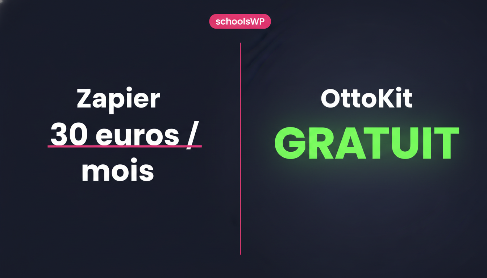
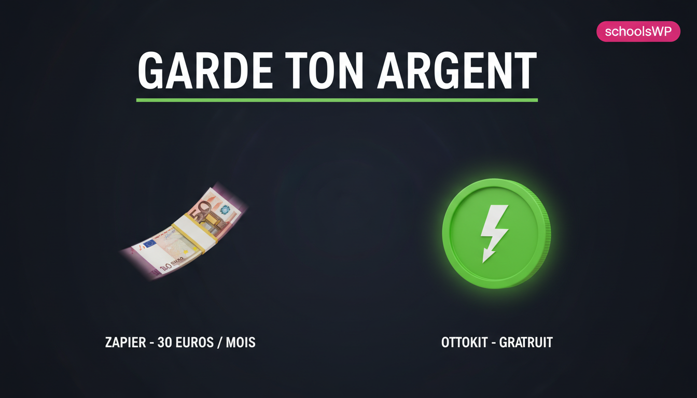
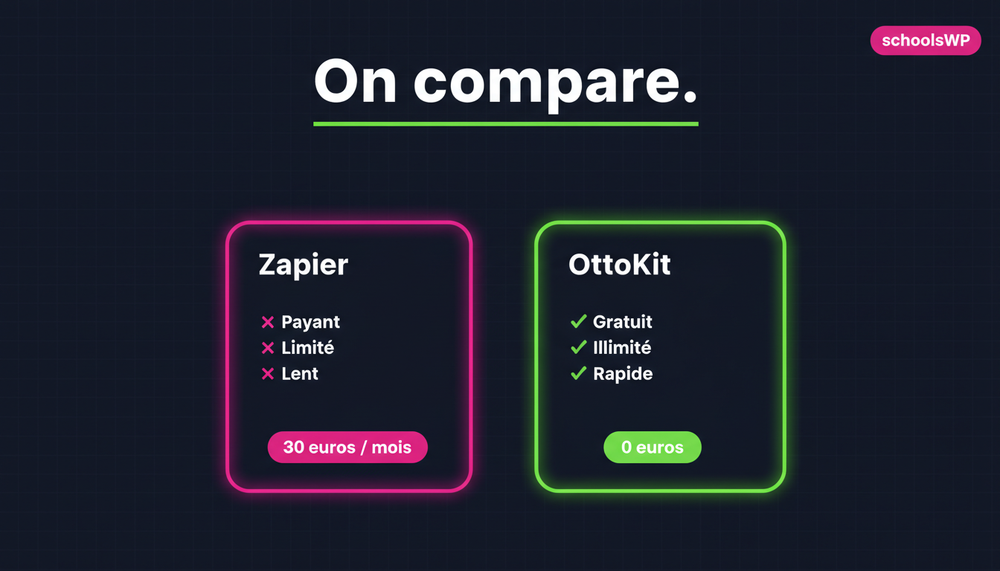

OttoKit - concept #02 "Gratuit vs Zapier" - branding schoolsWP (v4-v6)
Palette #12111F + #00D400 + #E668D4. Modele gemini-2.5-flash-image. Genere le 2026-04-17 10:00.

02-zapier-v4-typo-brand
Typo frontale split, palette schoolsWP
02-zapier-v5-argent-brand
Métaphore argent éditoriale, palette schoolsWP
02-zapier-v6-cartes-brand
Comparatif 2 cartes éditorial, palette schoolsWP